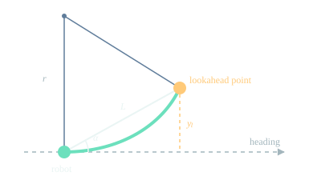

Pure Pursuit
A moving lookahead point pulls the robot along a waypoint route. Choose or draw ordered waypoints, set the controller parameters, and start the simulation to see how the robot follows the route.
Waypoints
Choose a fresh route, or draw one by clicking the plot in order.
Controller parameters
Adjust a value to recalculate the route.
Path tracking
The dashed route joins the selected waypoints and shows the interpolated path after Start. The green line shows the robot trace.
Replay
How Pure Pursuit steers
The robot follows a circular arc toward a point L metres ahead on the interpolated path. The point’s lateral offset sets the turn. The control output is linear speed v and angular speed ω; a proportional controller tracks the target speed.

Steering
κ = 2ylL2 = 1r
ω = κvtar = 2vtarylL2
yl = L sin α · ω is angular speed.
Speed control
a = kp (vtar − v)
vt = clip(vt−1 + a Δt, vmin, vmax)
The simulation limits acceleration, linear speed, and angular speed to the robot’s bounds.
Look ahead
The controller selects a point farther along the interpolated route.
Turn toward it
The lateral target offset determines curvature and angular speed.
Track speed
A proportional controller adjusts acceleration toward the target linear speed.